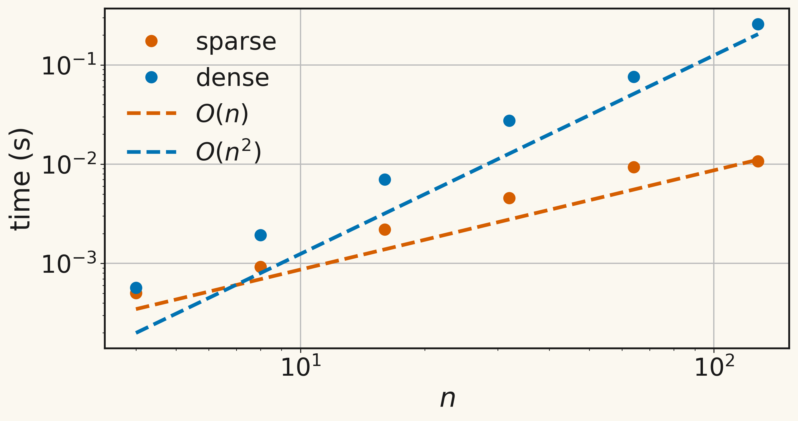

Iterative solvers for systems of linear equations
Chapter 5
| Direct methods | |
|---|---|
| Examples | Gaussian elimination, LU factorisation |
| Cost | \(O(n^3)\) |
| Storage | \(O(n^2)\) (storing the matrix) |
As an alternative, we will propose some iterative methods.
Finds a sequence \(\vec{x}^{(k)}\) with \(\vec{x}^{(k)} \to \vec{x}^*\) for \(A \vec{x}^* = \vec{b}\).
The iteration is defined recursively: \[ \vec{x}^{(k+1)} = \vec{F}(\vec{x}^{(k)}). \]
We will need to define
These are examples of potential iterative methods which would not work very well!
Consider
\[ \vec{F}(\vec{x}^{(k)}) = \vec{x}^{(k)}. \]
Each iteration is very cheap to compute but very inaccurate – it never converges!
Consider
\[ \vec{F}(\vec{x}^{(k)}) = \vec{x}^{(k)} + A^{-1} (\vec{b} - A \vec{x}^{(k)}). \]
Each iteration is very expensive to compute – you have to invert \(A\)! – but it converges in just one step since
\[ \begin{aligned} A \vec{x}^{(1)} & = A \vec{x}^{(0)} + A A^{-1} (\vec{b} - A \vec{x}^{(0)}) \\ & = A \vec{x}^{(0)} + \vec{b} - A \vec{x}^{(0)} \vec{b}. \end{aligned} \]
We will construct iterations with
\[\begin{equation} \label{eq:general-iteration} \vec{F}(\vec{x}^{(k)}) = \vec{x}^{(k)} + P (\vec{b} - A \vec{x}^{(k)}). \end{equation}\]
for some matrix \(P\) such that
Module learning objective
One straightforward choice for \(P\) in \(\eqref{eq:general-iteration}\) is given by the Jacobi method where we take \(P = D^{-1}\) where \(D\) is the diagonal of \(A\): \[ D_{ii} = A_{ii} \quad \text{and} \quad D_{ij} = 0 \text{ for } i \neq j. \]
The Jacobi iteration is given by
\[ \vec{x}^{(k+1)} = \vec{x}^{(k)} + D^{-1}(\vec{b} - A \vec{x}^{(k)}) \]
\(D\) is a diagonal matrix, so \(D^{-1}\) is trivial to form (as long as the diagonal entries are all non-zero): \[ (D^{-1})_{ii} = \frac{1}{D_{ii}} \quad \text{and} \quad (D^{-1})_{ij} = 0 \text{ for } i \neq j. \]
Given \(\vec{x}^{(k)}\), find \(\vec{x}^{(k+1)}\):
\[\begin{align*} x_1^{(k+1)} &= x_1^{(k)} + \frac{1}{A_{11}} \left( b_1 - \sum_{j=1}^n A_{1j} x_j^{(k)} \right) \\ x_2^{(k+1)} &= x_2^{(k)} + \frac{1}{A_{22}} \left( b_2 - \sum_{j=1}^n A_{2j} x_j^{(k)} \right) \\ \vdots \quad & \hphantom{=} \quad \vdots \\ x_n^{(k+1)} &= x_n^{(k)} + \frac{1}{A_{nn}} \left( b_n - \sum_{j=1}^n A_{nj} x_j^{(k)} \right). \end{align*}\]
Take two iterations of Jacobi iteration to approximate the solution of the following system using the initial guess \(\vec{x}^{(0)} = (1, 1)^T\): \[ \begin{pmatrix} 2 & 1 \\ -1 & 4 \end{pmatrix} \begin{pmatrix} x_1 \\ x_2 \end{pmatrix} = \begin{pmatrix} 3.5 \\ 0.5 \end{pmatrix} \]
\[ \begin{pmatrix} 2 & 1 \\ -1 & 4 \end{pmatrix} \begin{pmatrix} x_1 \\ x_2 \end{pmatrix} = \begin{pmatrix} 3.5 \\ 0.5 \end{pmatrix}, \qquad \vec{x}^{(0)} = \begin{pmatrix} 1 \\ 1 \end{pmatrix}. \]
Take one iteration of Jacobi iteration to approximate the solution of the following system using the initial guess \(\vec{x}^{(0)} = (0, 1, 1)^T\):
\[ \begin{pmatrix} 1 & -2 & 4 \\ -1 & -2 & -1 \\ -1 & -5 & 1 \end{pmatrix} \begin{pmatrix} x_1 \\ x_2 \\ x_3 \end{pmatrix} = \begin{pmatrix} -3 \\ 4 \\ 5 \end{pmatrix}. \]
We note that we can also slightly simplify the way the Jacobi iteration is written. We can expand \(A\) into \(A = L + D + U\), where \(L\) and \(U\) are the parts of the matrix from below and above the diagonal respectively: \[ L_{ij} = \begin{cases} A_{ij} &\quad \text{if } i < j \\ 0 &\quad \text{if } i \ge j, \end{cases} \qquad U_{ij} = \begin{cases} A_{ij} &\quad \text{if } i > j \\ 0 &\quad \text{if } i \le j. \end{cases} \]
Module learning objective
As an alternative to Jacobi iteration, the iteration might use \(x_i^{(k+1)}\) as soon as it is calculated (rather than using the previous iteration):
Given \(\vec{x}^{(k)}\), find \(\vec{x}^{(k+1)}\):
\[\begin{align*} x_1^{(k+1)} & = x_1^{(k)} + \frac{1}{A_{11}} \left( b_1 - \sum_{j=1}^n A_{1j} x_j^{(k)} \right) \\ \vdots \quad & \hphantom{=} \quad \vdots \\ x_i^{(k+1)} & = x_i^{(k)} + \frac{1}{A_{ii}} \left( b_i - \sum_{j=1}^{i-1} A_{ij} x_j^{(k+1)} - \sum_{j=i}^n A_{ij} x_j^{(k)} \right) \\ \vdots \quad & \hphantom{=} \quad \vdots \\ x_n^{(k+1)} & = x_n^{(k)} + \frac{1}{A_{nn}} \left( b_n - \sum_{j=1}^{n-1} A_{nj} x_j^{(k+1)} - A_{nn} x_n^{(k)} \right). \end{align*}\]
Consider the system \(A \vec{x}= b\) with the matrix \(A\) split as \(A = L + D + U\), where \(D\) is the diagonal of \(A\), \(L\) contains the elements below the diagonal, and \(U\) contains the elements above the diagonal. Gauss-Seidel iteration is: \[ \vec{x}^{(k+1)} = \vec{x}^{(k)} + (D + L)^{-1} (\vec{b} - A \vec{x}^{(k)}). \]
Take two iterations of Gauss-Seidel iteration to approximate the solution of the following system using the initial guess \(\vec{x}^{(0)} = (1, 1)^T\):
\[ \begin{pmatrix} 2 & 1 \\ -1 & 4 \end{pmatrix} \begin{pmatrix} x_1 \\ x_2 \end{pmatrix} = \begin{pmatrix} 3.5 \\ 0.5 \end{pmatrix} \]
\[ \begin{pmatrix} 2 & 1 \\ -1 & 4 \end{pmatrix} \begin{pmatrix} x_1 \\ x_2 \end{pmatrix} = \begin{pmatrix} 3.5 \\ 0.5 \end{pmatrix}, \vec{x}^{(0)} = \begin{pmatrix} 1 \\ 1 \end{pmatrix}. \]
Take one iteration of Gauss-Seidel iteration to approximate the solution of the following system using the initial guess \(\vec{x}^{(0)} = (0, 1, 1)^T\):
\[ \begin{pmatrix} 1 & -2 & 4 \\ -1 & -2 & -1 \\ -1 & -5 & 1 \end{pmatrix} \begin{pmatrix} x_1 \\ x_2 \\ x_3 \end{pmatrix} = \begin{pmatrix} -3 \\ 4 \\ 5 \end{pmatrix}. \]
Here, both methods converge, but relatively slowly. They might not converge at all!
We will discuss convergence and when to stop later.
The Gauss-Seidel iteration generally out-performs the Jacobi iteration.
Performance can depend on the order in which the equations are written.
Both iterative algorithms can be made faster and more efficient for sparse systems of equations (far more than direct methods).
Module learning objective
Sparse matrices are prevalent in any application which relies on some form of graph structure (see both the temperature and traffic network examples).
The \(a_{ij}\) typically represents some form of “communication” between vertices \(i\) and \(j\) of the graph, so the element is only nonzero if the vertices are connected.
There is no generic pattern for these entries, though there is usually one that is specific to the problem solved.
Usually, \(a_{ii} \neq 0\) - the diagonal is nonzero.
A “large” portion of the matrix is zero.
There are two main ways in which sparse matrices can be exploited in order to obtain benefits within iterative methods.
The storage can be reduced from \(O(n^2)\).
The cost per iteration can be reduced from \(O(n^2)\).
The simplest way in which a sparse matrix is stored is using three arrays:
A_real say) that stores the non-zero entries;I_row say) that stores the row number of the corresponding entry in the real array;I_col say) that stores the column numbers of the corresponding entry in the real array.This requires just \(3 \alpha n\) units of storage - i.e. \(O(n)\). This is called the COO (coordinate) format.
Given the above storage pattern, the following algorithm will execute a sparse matrix-vector multiplication (\(\vec{z} = A \vec{y}\)) in \(O(n)\) operations:
nonzero is the number of non-zero entries in the matrix.First let’s adapt our implementations to use this sparse matrix format:
Then we can test the two different implementations of the methods:

Module learning objective
In general the iteration takes the form \[ \vec{x}^{(k+1)} = \vec{F}(\vec{x}^{(k)}) \] here \(\vec{x}^{(k)}\) is a vector of values and \(\vec{F}\) is some vector-valued function which we have defined.
How can we decide if this iteration has converged? We need \(\vec{x} - \vec{x}^{(k)}\) to be small, but we do not have access to the exact solution \(\vec{x}\) so we have to do something else!
A maximum number of iterations?
The change in values should be small enough?
The residual should be small enough?
The Euclidean norm, or norm for short, is defined to be the square root of the sum of squares of the entries of the array: \[ \| \vec{r} \| = \sqrt{ \sum_{i=1}^n r_i^2 }. \] where \(\vec{r}\) is a vector with \(n\) entries.
Consider the following sequence \(\vec{x}^{(k)}\):
\[ \begin{pmatrix} 1 \\ -1 \end{pmatrix}, \begin{pmatrix} 1.5 \\ 0.5 \end{pmatrix}, \begin{pmatrix} 1.75 \\ 0.25 \end{pmatrix}, \begin{pmatrix} 1.875 \\ 0.125 \end{pmatrix}, \begin{pmatrix} 1.9375 \\ -0.0625 \end{pmatrix}, \begin{pmatrix} 1.96875 \\ -0.03125 \end{pmatrix}, \ldots \]
Consider the following sequence \(\vec{x}^{(k)}\):
\[ \begin{pmatrix} 1 \\ -1 \end{pmatrix}, \begin{pmatrix} 1.5 \\ 0.5 \end{pmatrix}, \begin{pmatrix} 1.75 \\ 0.25 \end{pmatrix}, \begin{pmatrix} 1.875 \\ 0.125 \end{pmatrix}, \begin{pmatrix} 1.9375 \\ -0.0625 \end{pmatrix}, \begin{pmatrix} 1.96875 \\ -0.03125 \end{pmatrix}, \ldots \]
Let \(\vec{x} = \begin{pmatrix} 2 \\ 0 \end{pmatrix}\).
In general there are two possible reasons that an iteration may fail to converge.
It may diverge - this means that \(\|\vec{x}^{(k)}\| \to \infty\) as \(k\) (the number of iterations) increases, e.g.:
\[ \begin{pmatrix} 1 \\ 1 \end{pmatrix}, \begin{pmatrix} 4 \\ 2 \end{pmatrix}, \begin{pmatrix} 16 \\ 4 \end{pmatrix}, \begin{pmatrix} 64 \\ 8 \end{pmatrix}, \begin{pmatrix} 256 \\ 16 \end{pmatrix}, \begin{pmatrix} 1024 \\ 32 \end{pmatrix}, \ldots \]
It may neither converge nor diverge, e.g.:
\[ \begin{pmatrix} 1 \\ 1 \end{pmatrix}, \begin{pmatrix} 2 \\ 0 \end{pmatrix}, \begin{pmatrix} 3 \\ 1 \end{pmatrix}, \begin{pmatrix} 1 \\ 0 \end{pmatrix}, \begin{pmatrix} 2 \\ 1 \end{pmatrix}, \begin{pmatrix} 3 \\ 0 \end{pmatrix}, \ldots \]
In addition to testing for convergence it is also necessary to include tests for failure to converge.
Divergence may be detected by monitoring \(\|\vec{x}^{(k)}\|\).
Impose a maximum number of iterations to ensure that the loop is not repeated forever!
Many real-world problems cannot be solved using direct methods. Iterative methods can often be used instead!
We have introduced two basic iterative methods
More advanced iterative methods do exist but are beyond the scope of this module - see Final year projects, MSc projects, PhD, and beyond!